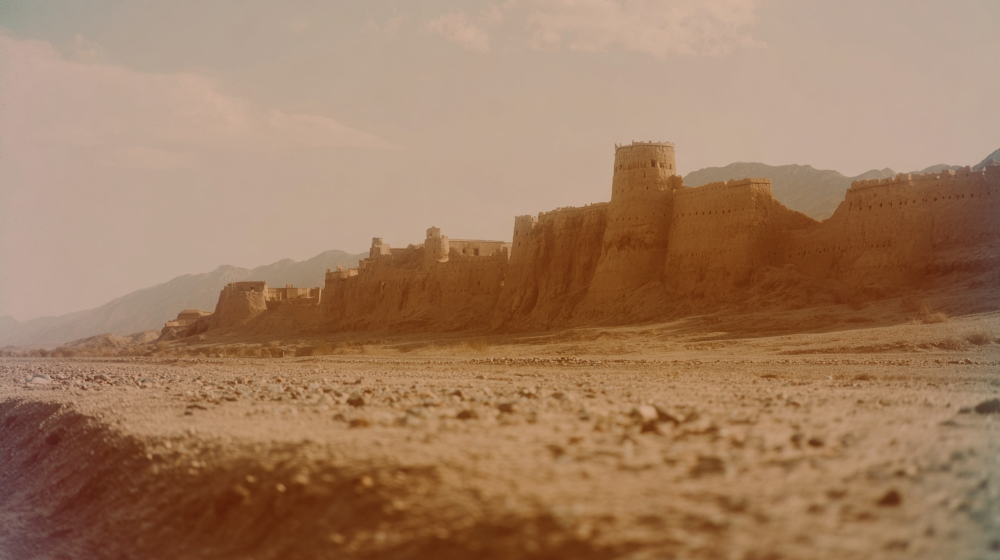
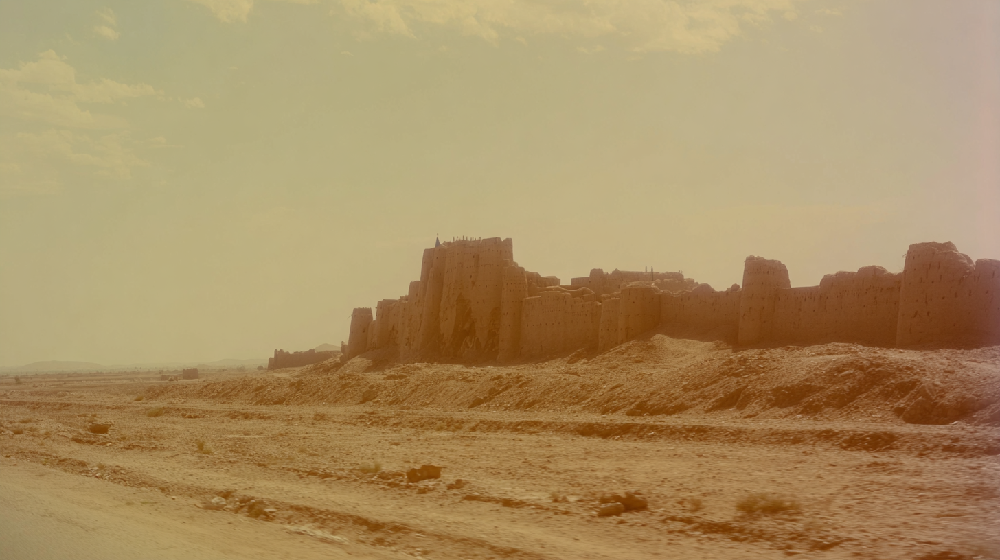
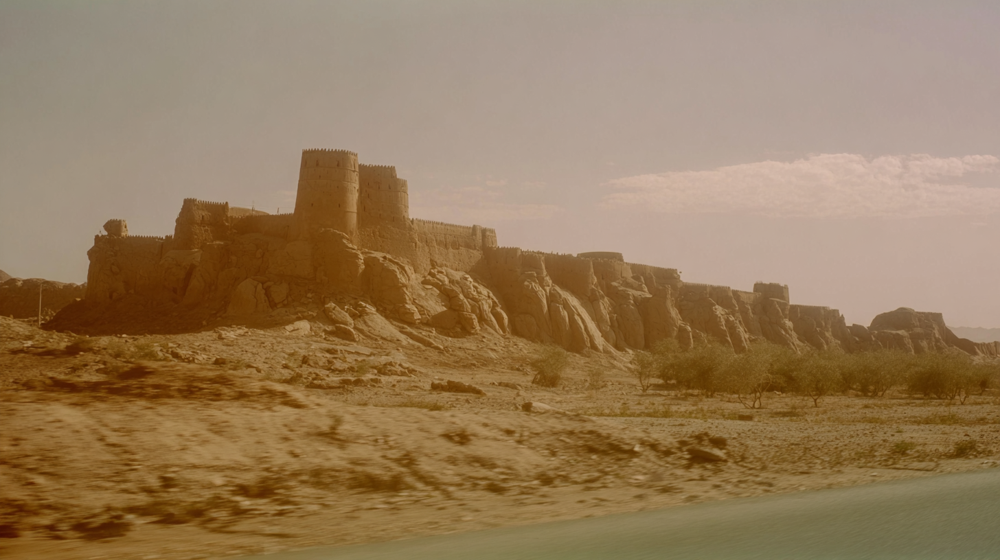
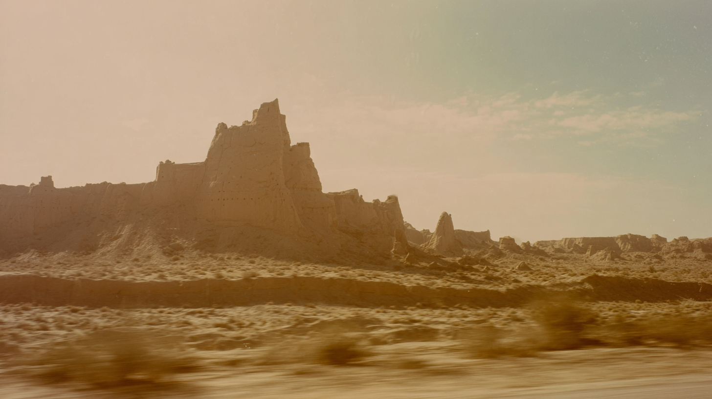

The fortress rises in the distance beyond a gently sloping desert plain, its weathered towers silhouetted against a pale, heat-washed sky with muted cinematic tones
: A wide, sun-faded view of an ancient desert fort stretches across a barren foreground of stones and dust, its towering earthen walls glowing softly under a hazy, warm sky.
: A closer, more intimate view of the crumbling desert stronghold reveals textured earthen walls and jagged ruins, glowing warmly beneath a soft, dust-filled sky.
desert fort rising in the very far distance along a quiet roadside, viewed from a slowly moving vehicle, wide cinematic composition, fort stood against vast arid landscape, sandy and rocky foreground, subtle shutter drag in lower frame from car movement, realistic natural motion softness.
cinematic film look blended with archival desert photography, muted earth tones, low contrast grading, soft highlight rolloff, hazy dry atmosphere, heat shimmer in the distance, pale warm sky, soft warm reflections in sand and dust, light film grain, organic texture, slight age fade, low digital sharpness